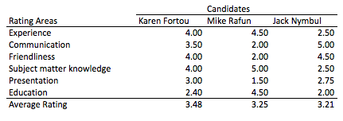
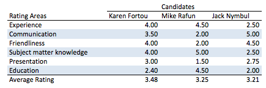
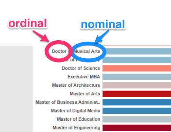
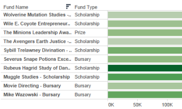
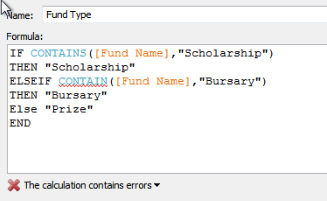
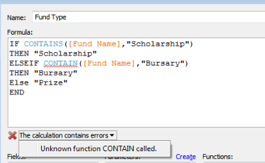

Due: Quiz 1
Blackboard --> This course --> Quizzes --> Quiz1
note: there are some multiple answer questions
Lecture Notes
Administrativia
Quiz 1 is due this week (Blackboard --> Quizzes). It covers Few Chapters 2-4. You get one retake if you need it. There is a new Tableau tutorial file (I'll cover this at the end of these notes). In the video, I cover a little bit more on the details regarding quizzes in Blackboard.
Few, Chapter 2
In chapter 2, Few explains that when we graph we are engaging in quantitative storytelling and these stories are nearly always about relationships between variables. He initially classifies data into two categories -- quantitative and categorical then further expands categorical to the following data relationships:
- Nominal
- Ordinal
- Interval
- Hierarchical
A lot of this stems from the work in the 1940's by psychologist Stanley Stevens in which he classified scales of measurement into four types (nominal, ordinal, interval, and ratio). Few's definitions are somewhat different and apply more to how we represent the data. If we take this back to the terminology that is applicable to Tableau, we have dimensions and measures. Measures are typically quantitative variables and dimensions are typically categorical variables. Nominal variables are discrete (unordered). Looking back at the Tableau tutorial we did last week, genre (e.g., classical, rock, R&B, etc.) would be an example of a nominal variable. Ordinal variables have some order to them. They typically can be sorted in a meaningful non-alphabetic way (e.g., small < medium < large). Interval variables are like ordinal variables except they consist of a sequential series of numerical ranges. In data analysis these intervals are often referred to as bins (e.g., less than 20, 20-40, 40-60, ...). Don't try to attempt to reconcile the differences between the Stevens' definitions and Few's definitions but understand that Stevens was primarily talking about data analysis and Few is primarily talking about representing data. Finally, hierarchies are often represented as parent-to-child relationships (e.g., product type --> product).
The remainder of chapter 2 is devoted to numbers that summarize. At this point, it is important to reiterate that these notes, and the corresponding videos, are not a substitute for the book. I am merely highlighting a few points made in each chapter and adding some additional context or information. It is exceptionally important that you read and understand the book and I would recommend reading it before reviewing these notes or watching the videos.
Few, Chapter 3
In chapter 3, Few examines the roles of tables and graphs. It is helpful to understand that, while much of the book applies to any medium, it is primarily written for printed matter. The example table few gives of an employment candidate review form (below) shows a well designed table for print.
If I were presenting the table on a slide, I might want to add some horizontal banding (as seen below) so folks can more easily follow the criteria.
The main takeaway from chapter 3 is that tables are fine for displaying small amounts of data but graphs have the ability to encode more data and more complex relationships between variables in a small amount of space. The end of chapter "Summary at a Glance" provides good heuristics for when to select tables and graphs.
Few, Chapter 4
Chapter 4 is a rather short chapter that discusses unidirectional (i.e., showing categories across columns, or down rows, but not in both directions) table design and bidirectional (i.e., showing categories across columns AND down rows) table design. Examples are shown in the video. The summary at a glance section at the end of the chapter very nicely provides recommendations for when to use unidirectional and bidirectional tables.
Tableau Tutorial
In the video, I walk through a few of the concepts introduced in chapter 2 using the calculations tutorial. The Degree dimension in (Tab 1 - Top Donors by Degree) illustrates that some data doesn't necessarily fit nicely into the categories (often because of the way it is structured). For example, there is no quantitative difference between Bachelor of Arts and Bachelor of Commerce making the Degree dimension appear to be nominal. There is, however, a quantitative difference between a Bachelor of Science and a Doctor of Science indicating that there are some ordinal components to the dimension (see image below).
The problem is that if we want to sort by degree, we currently have to treat it as nominal data and sort it alphabetically (losing the ability to represent the ordinal differences). Often, this can be resolved by seeing if you can break the variable down into a finer level. In this case, if we wanted to sort hierarchically, we would break the degree dimension down into two separate dimensions -- something like degree level (e.g., Bachelor, Master, Doctor) and degree program (e.g., Arts, Commerce, Science). Tab 2 - Funds by Type shows how to start this process but uses the Fund Name dimension instead. The image below shows that tab 5 - Top funds represents a hierarchical relationship (Fund Type --> Fund Name). Also note, there is an error in the tutorial that I intentionally leave in. I cover why I do this in the video.
Getting Help
Coding errors are easy to make.
When you receive the red x shown below informing you that your calculation contains errors you really want to click on the down arrow for more information.
If you still can't resolve the problem, you might be tempted to email me. Please post any technical questions you might have to piazza. I check regularly and will answer them but posting them to piazza provides a few advantages.
- Other people may benefit from your question.
- It gives people the opportunity to earn participation points answering your questions.
- More people looking at the question might result in faster response time.